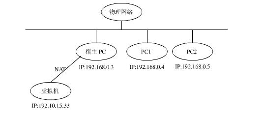
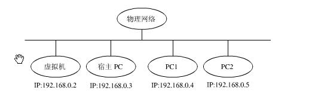

centos命令行通过kvm安装centos
官方：http://www.linux-kvm.org
一 KVM简介
KVM (for Kernel-based Virtual Machine) is a full virtualization solution for Linux on x86 hardware containing virtualization extensions (Intel VT or AMD-V). It consists of a loadable kernel module, kvm.ko, that provides the core virtualization infrastructure and a processor specific module, kvm-intel.ko or kvm-amd.ko.
Using KVM, one can run multiple virtual machines running unmodified Linux or Windows images. Each virtual machine has private virtualized hardware: a network card, disk, graphics adapter, etc.
KVM is open source software. The kernel component of KVM is included in mainline Linux, as of 2.6.20. The userspace component of KVM is included in mainline QEMU, as of 1.3.
二 安装KVM
查看cpu是否支持虚拟化
# grep - Ei 'vmx|svm' /proc/cpuinfo
其中vmx为intel，svm为amd
安装
# yum install qemu-kvm qemu-kvm-tools qemu-img virt-manager libvirt libvirt-python libvirt-client bridge-utils virt-viewer virt-install
启动
# lsmod |grep kvm
# systemctl start libvirtd
三 修改用户
# vi /etc/libvirt/qemu.conf
#user = "root"
#group = "root"
以上两行取消注释
# systemctl restart libvirtd
四 下载centos
http://isoredirect.centos.org/centos/7/isos/x86_64/
推荐镜像：http://mirrors.cqu.edu.cn/CentOS/7.7.1908/isos/x86_64/
五 安装centos
1 nat方式

# virt-install --name=$myname --memory=61440,maxmemory=61440 --vcpus=16,maxvcpus=16 --os-type=linux --os-variant=rhel7 --location=/root/CentOS-7-x86_64-Minimal-1908.iso --disk path=/kvm/$myname/root.img,size=150 --disk path=/data1/$myname/data1.img,size=300 --bridge=virbr0 --graphics=none --console=pty,target_type=serial --extra-args="console=tty0 console=ttyS0"
注意：
1）--bridge=virbr0，使用kvm自动安装bridge的virbr0；
2）可以根据需要配置多个--disk，size单位为G，最简单的情形只需要配置一个disk来安装系统；
2 bridge方式

1 配置bridge
# cat /etc/sysconfig/network-scripts/ifcfg-br0 DEVICE=br0 ONBOOT=yes TYPE=Bridge BOOTPROTO=static IPADDR=192.168.1.100 GATEWAY=192.168.1.1 DNS1=192.168.1.1 DEFROUTE=yes
2 修改eth0
# vi /etc/sysconfig/network-scripts/ifcfg-eth0
最后追加
BRIDGE=br0
3 重启网络
# systemctl restart network
4 查看bridge
# brctl show
5 安装centos
# virt-install --name=$myname --memory=61440,maxmemory=61440 --vcpus=16,maxvcpus=16 --os-type=linux --os-variant=rhel7 --location=/root/CentOS-7-x86_64-Minimal-1908.iso --disk path=/kvm/$myname/root.img,size=150 --disk path=/data1/$myname/data1.img,size=300 --bridge=br0 --graphics=none --console=pty,target_type=serial --extra-args="console=tty0 console=ttyS0"
注意：--bridge=br0，使用刚才创建的br0；
PS：如果先以nat方式安装centos后，想要修改为bridge，可以修改
1）通过命令
# virsh edit $myname <interface type='bridge'> <mac address='52:54:00:e7:32:0d'/> <source bridge='br0'/> <model type='virtio'/> <address type='pci' domain='0x0000' bus='0x00' slot='0x03' function='0x0'/> </interface>
修改type为bridge，修改bridge为br0
2）直接修改文件
# vi /etc/libvirt/qemu/$myname.xml
修改后重启
# sytemctl restart libvirtd
六 文本界面安装centos
1 初始界面
================================================================================ ================================================================================ Installation 1) [x] Language settings 2) [!] Time settings (English (United States)) (Timezone is not set.) 3) [!] Installation source 4) [!] Software selection (Processing...) (Processing...) 5) [!] Installation Destination 6) [x] Kdump (No disks selected) (Kdump is enabled) 7) [ ] Network configuration 8) [!] Root password (Not connected) (Password is not set.) 9) [!] User creation (No user will be created) Please make your choice from above ['q' to quit | 'b' to begin installation | 'r' to refresh]: [anaconda] 1:main* 2:shell 3:log 4:storage-lo> Switch tab: Alt+Tab | Help: F1
注意：[!]为选填，可以按照数字和提示完成各项配置修改；
2 关于分区方式
其中5) [!] Installation Destination中需要选择分区方式，文本模式下不能定制各个分区的大小，自动分区逻辑为/目录50G，其他分给/home目录，如果想安装后调整默认分区大小，这里要选择LVM
================================================================================ ================================================================================ Partition Scheme Options [ ] 1) Standard Partition [ ] 2) Btrfs [x] 3) LVM [ ] 4) LVM Thin Provisioning Select a partition scheme configuration. Please make your choice from above ['q' to quit | 'c' to continue | 'r' to refresh]: c Generating updated storage configuration Checking storage configuration...
3 准备安装
================================================================================ ================================================================================ Installation 1) [x] Language settings 2) [x] Time settings (English (United States)) (Asia/Shanghai timezone) 3) [x] Installation source 4) [x] Software selection (Local media) (Minimal Install) 5) [x] Installation Destination 6) [x] Kdump (Automatic partitioning (Kdump is enabled) selected) 8) [x] Root password 7) [ ] Network configuration (Password is set.) (Not connected) 9) [ ] User creation (No user will be created) Please make your choice from above ['q' to quit | 'b' to begin installation | 'r' to refresh]: b [anaconda] 1:main* 2:shell 3:log 4:storage-lo> Switch tab: Alt+Tab | Help: F1
直到安装完成；
七 调整磁盘默认分区大小
默认分区大小为/目录50G，其他都分给/home目录，如果要调整，操作过程如下
# df - h Filesystem Size Used Avail Use% Mounted on devtmpfs 30G 0 30G 0% /dev tmpfs 30G 0 30G 0% /dev/shm tmpfs 30G 8.6M 30G 1% /run tmpfs 30G 0 30G 0% /sys/fs/cgroup /dev/mapper/centos-root 50G 1.3G 49G 2% / /dev/vda1 1014M 149M 866M 15% /boot /dev/mapper/centos-home 84G 33M 84G 1% /home tmpfs 5.9G 0 5.9G 0% /run/user/0 # umount /home # lvremove /dev/mapper/centos-home # lvextend - L +50G /dev/mapper/centos-home # xfs_growfs /dev/mapper/centos-root # lvcreate - L 34G - n home centos # mkfs.xfs /dev/centos/home # mount /dev/mapper/centos-home # df - h Filesystem Size Used Avail Use% Mounted on devtmpfs 30G 0 30G 0% /dev tmpfs 30G 0 30G 0% /dev/shm tmpfs 30G 8.6M 30G 1% /run tmpfs 30G 0 30G 0% /sys/fs/cgroup /dev/mapper/centos-root 100G 1.3G 99G 2% / /dev/vda1 1014M 149M 866M 15% /boot /dev/mapper/centos-home 34G 33M 34G 1% /home tmpfs 5.9G 0 5.9G 0% /run/user/0
八 网络
1 nat方式
执行
# dhclient eth0
即可上网
[root@test ~]# ip addr 1: lo: <LOOPBACK,UP,LOWER_UP> mtu 65536 qdisc noqueue state UNKNOWN group default qlen 1000 link/loopback 00:00:00:00:00:00 brd 00:00:00:00:00:00 inet 127.0.0.1/8 scope host lo valid_lft forever preferred_lft forever inet6 ::1/128 scope host valid_lft forever preferred_lft forever 2: eth0: <BROADCAST,MULTICAST,UP,LOWER_UP> mtu 1500 qdisc pfifo_fast state UP group default qlen 1000 link/ether 52:54:00:aa:f7:c1 brd ff:ff:ff:ff:ff:ff [root@test ~]# dhclient eth0 [root@test ~]# ip addr 1: lo: <LOOPBACK,UP,LOWER_UP> mtu 65536 qdisc noqueue state UNKNOWN group default qlen 1000 link/loopback 00:00:00:00:00:00 brd 00:00:00:00:00:00 inet 127.0.0.1/8 scope host lo valid_lft forever preferred_lft forever inet6 ::1/128 scope host valid_lft forever preferred_lft forever 2: eth0: <BROADCAST,MULTICAST,UP,LOWER_UP> mtu 1500 qdisc pfifo_fast state UP group default qlen 1000 link/ether 52:54:00:aa:f7:c1 brd ff:ff:ff:ff:ff:ff inet 192.168.122.13/24 brd 192.168.122.255 scope global dynamic eth0 valid_lft 3597sec preferred_lft 3597sec [root@test ~]# PING www.a.shifen.com (14.215.177.39) 56(84) bytes of data. 64 bytes from 14.215.177.39 (14.215.177.39): icmp_seq=1 ttl=53 time=23.9 ms
2 bridge方式
1）设置静态ip
# cat /etc/sysconfig/network-scripts/ifcfg-eth0 TYPE=Ethernet BOOTPROTO=static DEFROUTE=yes NAME=eth0 UUID=0a67f932-b328-49ce-8166-af12fb0b482f DEVICE=eth0 ONBOOT=yes IPADDR=192.168.1.101 GATEWAY=192.168.1.1 DNS1=192.168.1.1 DEFROUTE=yes
2）重启网络
# systemctl restart network
3）测试宿主机（192.168.1.100）和虚拟机（192.168.1.101）之间的连通性
九 常用命令
设置kvm自动重启
# systemctl enable libvirtd
virsh相关
# virsh list --all # virsh console $myname # virsh start $myname # virsh shutdown $myname # virsh destroy $myname # virsh undefine $myname
# virsh autostart $myname
# virsh autostart --disable $myname
进入虚拟机之后可以安装一些常用命令，比如ifconfig
# yum install net-tools
最后可以在宿主机通过virsh连接虚拟机或者远程通过192.168.1.101连接虚拟机；
参考：
http://www.linux-kvm.org/page/Main_Page